Wargaming
Lenoon's Warhound: Structure
This article is part of a series. For part one, please see Warhound: Intent.
When your ideas hit the brick wall of your limitations, what breaks first? Do you compromise on your vision, or do you learn a new skill? I tend towards compromise - and excuse. When I don’t know how to do something, I shy away from it, so the Warhound has lain, glowering, at my shoulder. It is now two legs, a waist and a blocky interior. There’s no focus, and no structure. A head brings focus. The feet will bring structure. Both need to be created before I can move on.
Perhaps, then, this needs to be a little more practical than last time. This is, after all, a practical challenge. I know - we know - I can spin a good line of quasi-mystical nonsense about Warhammer. Building something like this is a very different task. It requires care and attention - the modelling equivalents of proper grammar, punctuation and drafting. For all that the pieces are a little warped and the majority of the weight is caused by casting as much in a single piece as possible, the Warhound is a nice kit. It is a remarkably posable one, all the effort and 90% of the pieces spent in designing feet and legs which can move in just so a manner, all ball sockets, tongue and groove, half-lap and resizable pistons. There are enough points of articulation to make it stalking, running, sprinting or - of course - standing guns and legs akimbo, with the head slightly off to one side, the Warhound you see most often. What I can see - the crow-form raises a claw that clutches something that remains just out of my minds eye - is definitely possible. The old image of the maybe-shrike seen through mists and memory determines the pose. It clutched a hawthorn branch, with leg raised straight, staring down the barrel of a thorn, seeming frozen in the act of calculation, ready to spear-and-store. That’s what I want here - raised from the ground, toes wrapped around a branch, the other bloody and gore-clad.
Finding and delivering that structure means thinking - and writing - this through, slowly. Whatever I want to do, the combination of superglue, epoxy and pins means I’ve irreversibly committed to one leg up, one down. How can I make this work?
I think about the Skull. The question what do I do with this monument to the printer’s art rattles around mine for a few days. It is an agonising process, I am so invested in using it - what heroic effort was put in for this! What love! What regard! - but it is too large, too all consuming, it becomes the thing without being of the thing. So it will be paid for and will be painted, but not for the Warhound. This strikes me as so immeasurably sad, even a betrayal of friendship - perhaps I am lonely these days, so rarely capable of seeing people in the flesh - that I sit the skull to ponder on the edge of the bath, sacred thinking-space that it is. I force myself to put aside both book and phone and just look into the orbits, to note every attachment point, the curves where steam curls and condenses.
The skull is a biomechanical wonder, really, isn't it? A cage and scaffold of levers, planes and hollows wherein resides consciousness, a place we can point to to designate between meat and mind, machine and pilot. If our consciousness was distributed around our bodies, would we structure our perceptions differently, do away with focal points entirely, understand the world-as-network? I imagine pouring brain into the raven skull, feeding it long neuron-proxies with Uhu, hollowing it for the main body and cramming servoskulls, 40k weirdos, fungus and earth into it, but nothing sticks, nothing resonates. It is too big.
I tend to take a bath late at night. I sleep right after. I dream of the skull, but it glints and shimmers. The hippocampus takes over, but, over-taxed (and underpaid), the raven skull is rendered in low-poly wireframe, a vision from long lost C64 games that I either remember or fabricate. The idea sticks, though. In the morning, I order copper. The Warhound will remain headless until I buy a blowtorch. I switch focus from top to bottom.
w=? h=? G1<G2 ~ mgN
Well, by the time I’m done, probably about 5kg and I think the full height of the model is about 30cm, maybe 45cm if I stick to the plan.
CwG Tipping angle θ + ϕ = 90°, 2500g, 450mm, uniform h/w for CoG?
No, it’ll be fairly lopsided I think, but I’ve been told the centre of gravity is a bit odd, usually in front of the feet.
Feet?
I get a picture out. And then another. Then an article, and a picture of a Shrike. It’s a very silly thing, but I can tell the effect of coming with a maths question - not another admin question - to a mathematician is exciting, and serious effort gets put in here. There are formulae, there are estimates, there are blobs of blu-tac stuck on the end of pencils. The answer arrives that the centre of gravity should be as central to the base as possible, and that the minimum workable single base size if I go very tall is
The words tumble out but I cant follow, something about the tipping moment, suspended weight and a righting moment - what the hell is a moment - expected value, central variance, skewness, kurtosis - perhaps I shouldn’t have asked
somewhere around 16cm, or less if I make it heavier. A 16cm base seems extremely small, and I’m not confident in the slightest that I can centre the weight perfectly - or that I’ve estimated any of the needed measurements correctly. This is the maths, anyway, not the iron-hard certainty of leaving a model on the shelf and knowing that the slightest zephyr of breeze won’t bring it crashing down. I am told that the weight needs to be distributed fairly evenly across the centre of gravity to front, back, left and right. When I get home, I can see no way of doing this while keeping the waist level, so I don’t bother. Luckily, the big pin I drove through the hips with drill and hammer still has some movement in it. The waist is tilted back off the vertical.
Armed with this knowledge, I head to the carpenter. 200mm seems right; I can fit a lot of the scenic elements I’d been thinking of and have a good margin of error for the maths without being incredibly, ridiculously over large (like the Porphyrion base). It also needs to be heavy, pulling, as much as possible, the centre of gravity for the model down. It needs serious weight - stones, bark, bone, metal, sand. Luckily, I have those in abundance.
The base becomes a lot of fun. A diversion. A rhino is cut up, the bones are excavated from their storage in the front garden - thank you various beetles, fungi and ants for cleaning them for me - and the good thick bark I picked up a couple of months ago finally has a use. It proceeds very quickly. 200mm round is a good amount of space. The process of building and painting the base takes over. I really fall into it, filling up craters with gloss varnish and individually placing a lot of leaves. Bodies are thrown on - there’s four Nazis drowned in mud on there, somewhere - and the dancers of the seasons wend their way through my painting queue before being placed, frozen between steps, in the prescribed order - winter, autumn, summer, spring.
It just keeps coming. One model is finished and another one leaps forward. Four Seasons, four corpses, one doctor, four types of flower withering their way to dust, eventually, four servitors, four servo skulls. I drive another drill bit up through the base and into the foot, then sculpt a human lamprey with its innards hanging out entirely just to hide the pin. It is absolutely joyous, my favourite part of painting and modelling - it feels like play, because it is. The lamprey-thing is born from necessity (you can see the giant, ugly, steel drill bit in the picture above), but turns into an excuse to get messy. Its progress is the most fun I've had modelling for quite some time.
I am hugely comfortable in this space, playing with glues, varnishes and putties to make an abominable thing held in the sliced up toes of the Warhound. It is so, so much fun. I spend more time painting an eye than I did working with resin up to this point.
The lamprey done, paint even begins to creep up the feet, crew begin to take shape in the torso, but then it stops and I struggle to push it further.
My focus has narrowed to the base and I can’t see beyond it. Why?
Warhammer is important to me, and, as Ceri explains, “occupational therapy is support for people to return to an activity that has meaning to them”, so this meeting is fortuitous. Nothing has changed for me - my ability to build and paint hasn’t been taken away - but there’s something here about retaining that importance, structuring an increasingly busy life to carve out space and time for the more practical, challenging aspects of this project. I have squeezed in this conversation between work, parenting and son-in-lawing, but then
There’s a framework that we use called Doing, Being, Belonging, Becoming. That’s a mouthful. The idea is that by doing something we are being something. Doing the model making we are being a person with an activity, a person with an occupation. We are being a model maker, and we are becoming an experienced model maker, part of a community. You say this is what I do, this is what I like. Noone sits there and thinks “I am doing this, so I am being this” - it’s a natural process that happens when you do something that harmonises with you.
In model making you’re building your own world. Whatever you’re intending to do with it, you’re in charge of what’s happening in that moment. You’re dictating the colours, the scheme, the battle damage, what this character looks like and, in that time whilst you’re painting and in that moment, it’s just you and the model. You are completely in charge of that moment, and there’s not many places in life where we have that level of control.
I relay, slightly abashed, my intent - a style that is all my own, all deliberate, all very me, put there by my hand, recognisable. I did spend time, once, trying to codify it, to make something recognisably me so that people would say “oh, that looks like a Lenoon piece”. It was external, but now, I have moved off from that - it’s not for Instagram, but for the power of saying actually, this is what I want.
That’s the Doing, Being, Becoming, Belonging idea. You’re becoming a role, you’re giving yourself a role - you are becoming the model maker. Becoming the painter, and you’ll be able to see yourself in this role you’ve wanted to get to.
I reached out to Ceri to chat about flow, originally. There’s a delicate and wonderful point I think we can all relate to when it’s just working, the paint moves effortlessly, the game winds to your inevitable victory, the plastic and milliput and glue sits just so. It’s the bit we chase, that I have very publicly chased in writing and modelling.
The flow state, Ceri explains, is the optimum point - the space we occupy when modelling between the axis of skill and challenge. When we’re balanced between skill - we can do this - and challenge - not too hard, but not too easy either - we can flow, right up through the centre.
It shows as well if the task is too difficult compared to the skill mix, you're going to have a higher level of anxiety and if you're essentially too good for the task, you've just set yourself, you're going to get bored quickly.
I sketch it as best I can it as she explains.
The challenge increases, and you have the ability to match it. When you’ve matched the two perfectly, that’s when you hit that perfect point and everything comes into focus. You’ve almost put yourself into a meditative state, where the mental processes have all calmed down. The background nervous system has calmed down. It gives your brain more of a chance to think, to go through problems
I was there in the seasons - How long did I spend painting sheer fabric? I don’t know, time vanished. I stopped counting the seconds. I can’t get there when working resin, but I can with plastic, putty and water effects.
It’s similar to how we work things out when we’re dreaming. You’re giving your brain space without realising your subconscious has taken over
That one I know, oh very well indeed. The crew emerged from a dream.
The idea really resonates with me and I see my modelling in it. Right up the centre, vibing as much with the unconscious as possible. There’s a solution in the model already, I know what to do, at some level. I need to find it. Can I - should I - force myself into flow?
It can have its downsides. It can become an addiction in a way. I mean, you're basically hitting your brain up with dopamine when you do it, so it can become a bit of an addiction and it can become a source of frustration. If you're trying to get to it, you won't get into it and so it then becomes a source of frustration.
The Porphyrion. It glowers.
People can fall so far into it that it becomes consuming, and they’re not able to come out of the chase of it, or don’t want to come out of it. That’s when you get things like relationship breakdowns, problems with work, problems holding onto a job, holding onto a friendship, those sorts of things. I dont think ive seen too many examples in the modelling community where it gets to that level, but certainly within other hobbies and activities it can get to that point.
Hmmm. I concede that maybe - just maybe - I might treat my Warhammer like that sometimes. Occasionally. I think of my last weeks of dreams, all engine-kills and growling reactors. Too much. I pat the Warhound on the foot to make sure it’s still there. I do not touch it again for two weeks.
One foot posing
A strange and unsettling head
White on brown on cream
Checks
The same silhouette
Same ol', same ol'. I can see it, too easily.
I see it in the writing too. Intent did what I always do: establish, ramble, touch on paganism, come to a fevered conclusion. It’s written in my perennial rhythms - the endless drip drip drip of tripartite clause (add a fourth for extra meaning, team!) that I attempt to use ever-so-slightly hypnotically, my conscious use of more and more commas as ideas develop, my ending plea to something bigger and beyond-er my making. It is deliberate, but it will turn the Warhound into the lancer, or the Porphyrion, or the Questoris. To get out of this rut with the Warhound, I need new structures. New Praxis. New ways of making and writing, to expand that space where I can flow by not just increasing skill but increasing enjoyment. I have new materials - all those copper sheets - and they will create the break, the extension of the skill/challenge zone to open up the phase-space of flow to new forms. I know this from a long time ago. New materials mean new forms, but before they do there's a period of the same forms from new materials - this happens in clay, in metal, in stone, and particularly in Bronze. The first bronze axes look just like the last ones in stone. Perhaps this is the end and the beginning, freed by resin. I need to talk to someone who knows Copper and Bronze, and knows the secrets of making. Luckily, she is at hand.
Photographed By Robin Maggs - National Museum Wales
2012
Rachel knows and understands and feels copper, brass and bronze better than anyone else I know, perhaps better than any since Hephaestus. Beyond that, she understands how and why we make, and she does so in a way that no one has ever thought before. To read her work on making, on copper and bronze, it is to see a living, glowing, thing that becomes the human soul. Here is a conversation I could have in person - we meet, all too infrequently - but I am impatient and, more importantly, I am intimidated. Rachel is a friend and a comrade and a Doctor, a kind and caring one that can explain even the most complicated interplay of posthumanist paradigms, that involves you in the discussion, makes you feel included in the grand and worthy project of posthumanist, feminist archaeology. But to stand in front of her intelligence when she casts it into the mould is to stand in the heat of the furnace - she is burningly, blisteringly intelligent. I need the remove of voice notes and asynchronous communication, just to keep up. I need quotes.
I read:
Often when we think about making, we envisage a maker who has a clear design in their head (or perhaps in a plan) that they have produced in advance and then execute. New materialist thinking approaches making quite differently. Rather than assuming that an agentic human sets out to execute their plan, it leaves space for the material itself to play a role in production
I understand:
If your understanding of agency is closely linked to intentionality, that it is something that rational human actors exercise, and thus something for which people, past and present, can be held accountable, it is little surprise that you might be alarmed by hearing that chairs, keys, or guns can also be associated with agency.
Both sword and warrior emerge in parallel, through the way they produce a particular body capable of certain affects. These include the capacity to inflict violence, not in a generic way, but rather in a particular manner, involving specific bodily movements (slashing, stabbing). The emergence of swords does not allow the emergence of warriors, nor does the emergence of warriors allow the emergence of swords; rather the two are brought into being together.
I/we create:
We can consider how a potter's hands apply force to clay to differentiate a shape from the previous amorphous matter. This, of course, draws on the capacities of clay to be shaped, and works with the water softening the material and the wheel upon which the clay is spinning—this is no simple imposition of form. These intensive differences of force are what drive the emergence of the entities we recognize in the world around us, from how intensive differences in pressure produce weather patterns, or the intensive energies of sunlight cause plants to grow in specific ways. Difference, then, is not after the fact, a matter of post hoc comparison, but rather an affirmative force that produces the world.
Then, I ask. I'm thinking of the Bronze Age axes, the copies of stone. It feels like what I'm doing here, why I'm stuck.
What do you mean? The shapes, or something else?
Yeah the shapes. Why make the same shape in a new material? Even if the answer is "because that's what they knew to do."
So the axes themselves are a different shape really, but they make these small things called ingot axes that are like a mini version of a polished stone axe. They rarely have any wear on them, and are often at least partially unfinished. There, the shape of a stone axe has clear currency for people, so the decision to make them in that shape at least partially captures a need to make the new material fit into the existing world.
So the form is important, beyond the material? The copper doesn't simply allow new forms, but enables the transformation of old ones into new contexts.
Exactly. It transforms what shapes and properties are possible, and that continues the ongoing becoming of the axe.
So it's through the axes that copper can become something other
Yes - interestingly we also get new forms of stone axe at the same time (the battle axe), and a proliferation of more elaborate crafts generally.
I'm thinking of the resin affecting me, but my style and my meaning is there already. The resin must be passed through it, incorporate it, embody it.
I ask again, with a different target:
New materials shape new practice, open new ways of being, while requiring socialisation, embedding into existing structures. Affect, difference, power, relation. This is something new to me and I’m forcing it into the same, long, narrative. What can I achieve if I stop warring against the resin and work with it, potter and clay, and what can I do to pass resin into my world of plastic, bone and pine?
So, write as you work, let it proceed in spirals (leaps, catastrophes, revolutions - thank you Vladimir), transformations of quantities into qualities, irrevocable, in snatches. I embrace to map out the next steps I just give in
I sit on the bus and think tonight I will saw off its shoulders tonight I will saw off its shoulders tonight I will take the saw and take off its shoulders straight through the steel pins and the rest of the day I think shoulders shoulders shoulders and then at night when all are asleep I don mask and gloves and glasses and under the light of a cold moon and the garden fairy lights I am still ambivalent towards I take off a shoulder and realise I have no plan for what will replace them
there is a day spent in the garden with a t-shirt worn seethrough, with turmeric, onion, glycerin cabbage and dandelion inculcating children into messy chaos into age old practice i pretend to renew that I treat casually and talk of seriously. We dye our hands and our clothes and i croon over them, i laugh at a pigeon, salute big and little, caper like the de’il, hoot like an owl. We colour in the feathers i see tumbling and cascading down, bone, metal, resin, glass, water, wood, stone grass and lavender catch the echoes of the dirge for all that cloth had seen and done, rendered down into potentiality, drawing into fibres the scraps of pigment and colour, as always struck with the abyssal sadness that life is not just this, not this moment in a rut, polished smooth to elide the rain;
I buy a blowtorch, learn to solder, take off half a fingerprint on red-hot copper, leave a thousand micro-lacerations on my hands from edges and working the tin snips. Pieced together from paper, then plastic, then metal, The head of bendigeidifran emerges painfully from a cocoon of glue and woodpulp, fiery and hot as the sun, stuck together with paperclips and hope, the cult-head, fountain-head, blessed head returning to the white hill where it belongs
Better. We progress.
Have any questions or feedback? Drop us a note in the comments below or email us at contact@goonhammer.com. Want articles like this linked in your inbox every Monday morning? Sign up for our newsletter. And don’t forget that you can support us on Patreon for backer rewards like early video content, Administratum access, an ad-free experience on our website and more.
When your ideas hit the brick wall of your limitations, what breaks first? Do you compromise on your vision, or do you learn a new skill? I tend towards compromise - and excuse. When I don’t know how to do something, I shy away from it, so the Warhound has lain, glowering, at my shoulder. It is now two legs, a waist and a blocky interior. There’s no focus, and no structure. A head brings focus. The feet will bring structure. Both need to be created before I can move on.
Perhaps, then, this needs to be a little more practical than last time. This is, after all, a practical challenge. I know - we know - I can spin a good line of quasi-mystical nonsense about Warhammer. Building something like this is a very different task. It requires care and attention - the modelling equivalents of proper grammar, punctuation and drafting. For all that the pieces are a little warped and the majority of the weight is caused by casting as much in a single piece as possible, the Warhound is a nice kit. It is a remarkably posable one, all the effort and 90% of the pieces spent in designing feet and legs which can move in just so a manner, all ball sockets, tongue and groove, half-lap and resizable pistons. There are enough points of articulation to make it stalking, running, sprinting or - of course - standing guns and legs akimbo, with the head slightly off to one side, the Warhound you see most often. What I can see - the crow-form raises a claw that clutches something that remains just out of my minds eye - is definitely possible. The old image of the maybe-shrike seen through mists and memory determines the pose. It clutched a hawthorn branch, with leg raised straight, staring down the barrel of a thorn, seeming frozen in the act of calculation, ready to spear-and-store. That’s what I want here - raised from the ground, toes wrapped around a branch, the other bloody and gore-clad.
Finding and delivering that structure means thinking - and writing - this through, slowly. Whatever I want to do, the combination of superglue, epoxy and pins means I’ve irreversibly committed to one leg up, one down. How can I make this work?
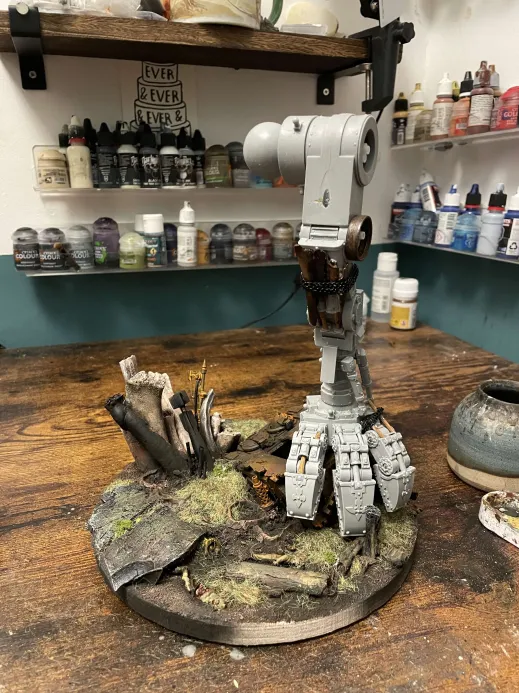
Where we left off. Lenoon's WarhoundHead Before Foot
We should start with the head. After measuring the size of the Warhound cockpit, I had to abandon my real bird skull plan. Short of buying an ostrich head (and where would I get one of those?) there’s not a lot of birds that can fit a chunk of resin the size of my daughters arm inside their cranium. Instead, I ask Snafu. Snafu is a comrade, a friend and - importantly - a print guy. He does his magic, with scaling and vertices and polygons and supports, spends god knows how long and how much on making me a raven skull that can sit atop the cockpit. It arrives, and I do not stop cackling for some time.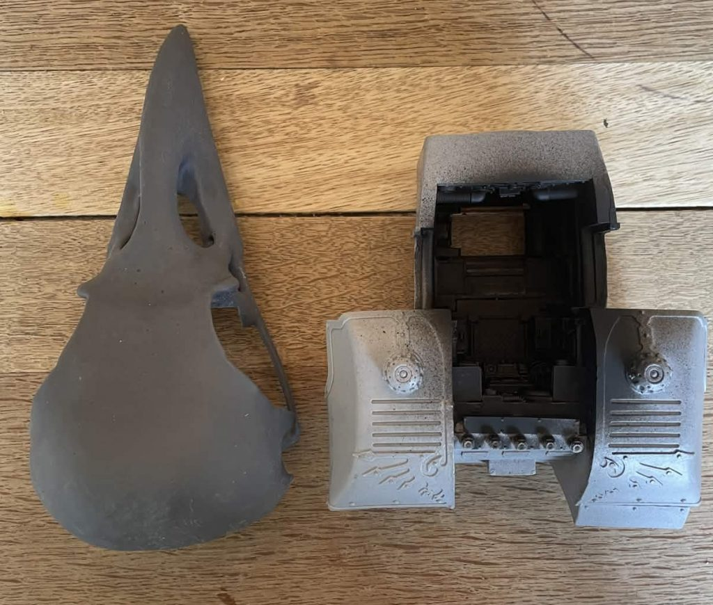
Now THAT is a headI think about the Skull. The question what do I do with this monument to the printer’s art rattles around mine for a few days. It is an agonising process, I am so invested in using it - what heroic effort was put in for this! What love! What regard! - but it is too large, too all consuming, it becomes the thing without being of the thing. So it will be paid for and will be painted, but not for the Warhound. This strikes me as so immeasurably sad, even a betrayal of friendship - perhaps I am lonely these days, so rarely capable of seeing people in the flesh - that I sit the skull to ponder on the edge of the bath, sacred thinking-space that it is. I force myself to put aside both book and phone and just look into the orbits, to note every attachment point, the curves where steam curls and condenses.
The skull is a biomechanical wonder, really, isn't it? A cage and scaffold of levers, planes and hollows wherein resides consciousness, a place we can point to to designate between meat and mind, machine and pilot. If our consciousness was distributed around our bodies, would we structure our perceptions differently, do away with focal points entirely, understand the world-as-network? I imagine pouring brain into the raven skull, feeding it long neuron-proxies with Uhu, hollowing it for the main body and cramming servoskulls, 40k weirdos, fungus and earth into it, but nothing sticks, nothing resonates. It is too big.
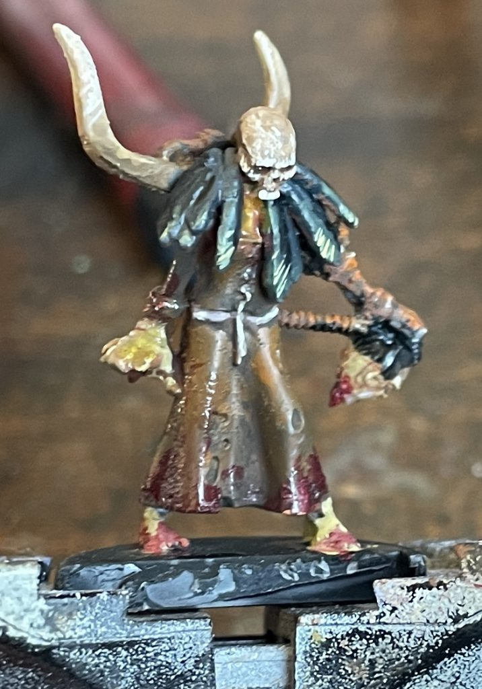
Birds, feathers, skullsI tend to take a bath late at night. I sleep right after. I dream of the skull, but it glints and shimmers. The hippocampus takes over, but, over-taxed (and underpaid), the raven skull is rendered in low-poly wireframe, a vision from long lost C64 games that I either remember or fabricate. The idea sticks, though. In the morning, I order copper. The Warhound will remain headless until I buy a blowtorch. I switch focus from top to bottom.
Foot Before Head
I have a meeting in a glass box with the School of Mathematics. There’s always an element of jealousy on my part in these meetings. I have them often, and there’s still just a twang of missing the life unlived because I don’t have my own glass box. We meet. We come to an accord, decide some actions, resolve some emails to mutually-known leaders, and in the pause before I leave, I ask for a moment to resolve a maths question. It goes like this: I’m building this thing, it’s big, and heavy, and the majority of the weight is on the top of it. How could I work out if it’ll tip over before I make it and it does?w=? h=? G1<G2 ~ mgN
Well, by the time I’m done, probably about 5kg and I think the full height of the model is about 30cm, maybe 45cm if I stick to the plan.
CwG Tipping angle θ + ϕ = 90°, 2500g, 450mm, uniform h/w for CoG?
No, it’ll be fairly lopsided I think, but I’ve been told the centre of gravity is a bit odd, usually in front of the feet.
Feet?
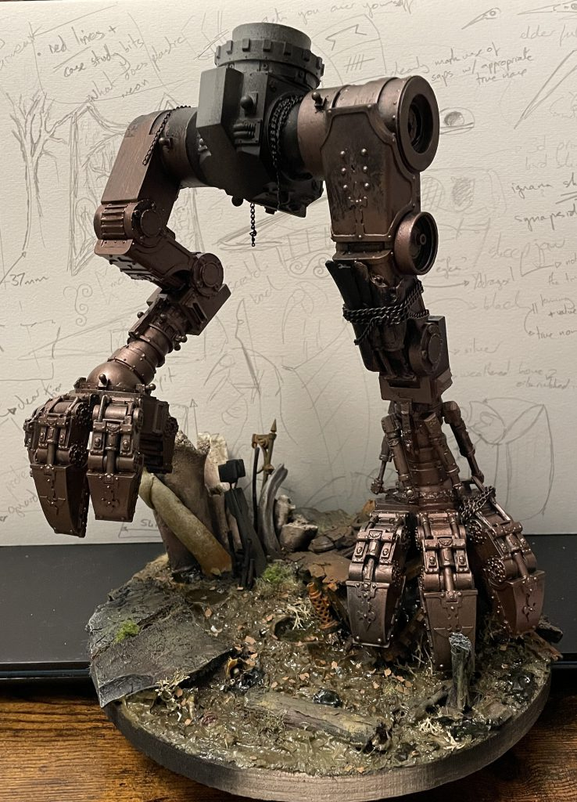
The legsI get a picture out. And then another. Then an article, and a picture of a Shrike. It’s a very silly thing, but I can tell the effect of coming with a maths question - not another admin question - to a mathematician is exciting, and serious effort gets put in here. There are formulae, there are estimates, there are blobs of blu-tac stuck on the end of pencils. The answer arrives that the centre of gravity should be as central to the base as possible, and that the minimum workable single base size if I go very tall is
The words tumble out but I cant follow, something about the tipping moment, suspended weight and a righting moment - what the hell is a moment - expected value, central variance, skewness, kurtosis - perhaps I shouldn’t have asked
somewhere around 16cm, or less if I make it heavier. A 16cm base seems extremely small, and I’m not confident in the slightest that I can centre the weight perfectly - or that I’ve estimated any of the needed measurements correctly. This is the maths, anyway, not the iron-hard certainty of leaving a model on the shelf and knowing that the slightest zephyr of breeze won’t bring it crashing down. I am told that the weight needs to be distributed fairly evenly across the centre of gravity to front, back, left and right. When I get home, I can see no way of doing this while keeping the waist level, so I don’t bother. Luckily, the big pin I drove through the hips with drill and hammer still has some movement in it. The waist is tilted back off the vertical.
Armed with this knowledge, I head to the carpenter. 200mm seems right; I can fit a lot of the scenic elements I’d been thinking of and have a good margin of error for the maths without being incredibly, ridiculously over large (like the Porphyrion base). It also needs to be heavy, pulling, as much as possible, the centre of gravity for the model down. It needs serious weight - stones, bark, bone, metal, sand. Luckily, I have those in abundance.
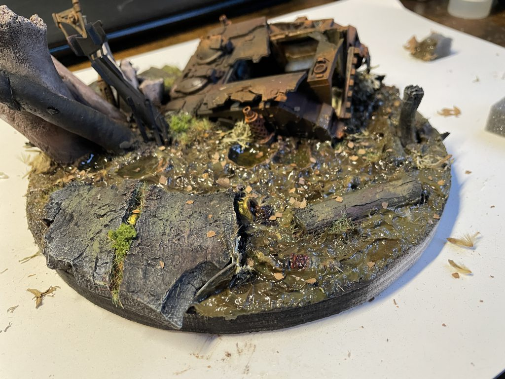
WeightyThe base becomes a lot of fun. A diversion. A rhino is cut up, the bones are excavated from their storage in the front garden - thank you various beetles, fungi and ants for cleaning them for me - and the good thick bark I picked up a couple of months ago finally has a use. It proceeds very quickly. 200mm round is a good amount of space. The process of building and painting the base takes over. I really fall into it, filling up craters with gloss varnish and individually placing a lot of leaves. Bodies are thrown on - there’s four Nazis drowned in mud on there, somewhere - and the dancers of the seasons wend their way through my painting queue before being placed, frozen between steps, in the prescribed order - winter, autumn, summer, spring.
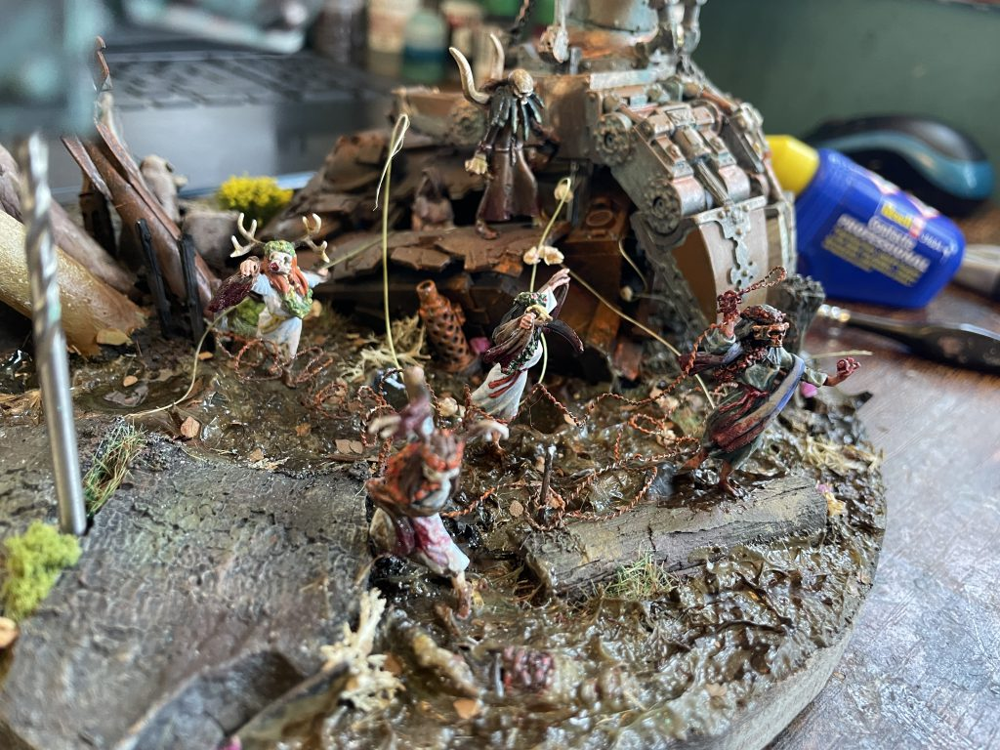
Lenoon’s warhound: structureIt just keeps coming. One model is finished and another one leaps forward. Four Seasons, four corpses, one doctor, four types of flower withering their way to dust, eventually, four servitors, four servo skulls. I drive another drill bit up through the base and into the foot, then sculpt a human lamprey with its innards hanging out entirely just to hide the pin. It is absolutely joyous, my favourite part of painting and modelling - it feels like play, because it is. The lamprey-thing is born from necessity (you can see the giant, ugly, steel drill bit in the picture above), but turns into an excuse to get messy. Its progress is the most fun I've had modelling for quite some time.
Loading...
I am hugely comfortable in this space, playing with glues, varnishes and putties to make an abominable thing held in the sliced up toes of the Warhound. It is so, so much fun. I spend more time painting an eye than I did working with resin up to this point.
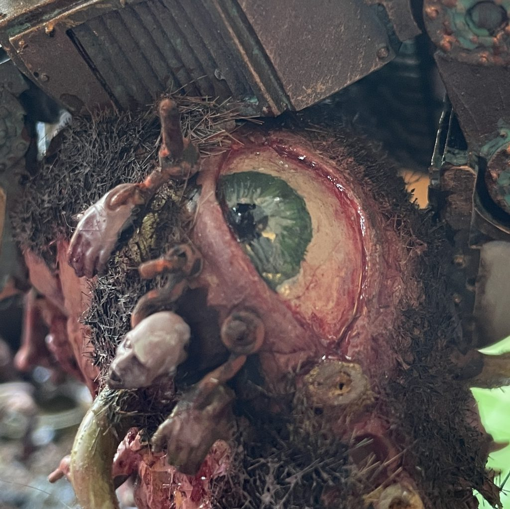
I see youThe lamprey done, paint even begins to creep up the feet, crew begin to take shape in the torso, but then it stops and I struggle to push it further.
My focus has narrowed to the base and I can’t see beyond it. Why?
Flow, Focus, Obsession
I reach out to Ceri Lawrence, an occupational therapist and fellow geek, after ruminating on why my comfortable place with the Warhound stops at the ankle. I’ve read something about this before, about flow, focus and obsession, and it stuck with me enough that months later I don’t even need to work to remember the author. A clear, succinct and perfect understanding of how and why we work the way we do. I have been arrested at the base, unwillingly, and Ceri knows why.Warhammer is important to me, and, as Ceri explains, “occupational therapy is support for people to return to an activity that has meaning to them”, so this meeting is fortuitous. Nothing has changed for me - my ability to build and paint hasn’t been taken away - but there’s something here about retaining that importance, structuring an increasingly busy life to carve out space and time for the more practical, challenging aspects of this project. I have squeezed in this conversation between work, parenting and son-in-lawing, but then
There’s a framework that we use called Doing, Being, Belonging, Becoming. That’s a mouthful. The idea is that by doing something we are being something. Doing the model making we are being a person with an activity, a person with an occupation. We are being a model maker, and we are becoming an experienced model maker, part of a community. You say this is what I do, this is what I like. Noone sits there and thinks “I am doing this, so I am being this” - it’s a natural process that happens when you do something that harmonises with you.
In model making you’re building your own world. Whatever you’re intending to do with it, you’re in charge of what’s happening in that moment. You’re dictating the colours, the scheme, the battle damage, what this character looks like and, in that time whilst you’re painting and in that moment, it’s just you and the model. You are completely in charge of that moment, and there’s not many places in life where we have that level of control.
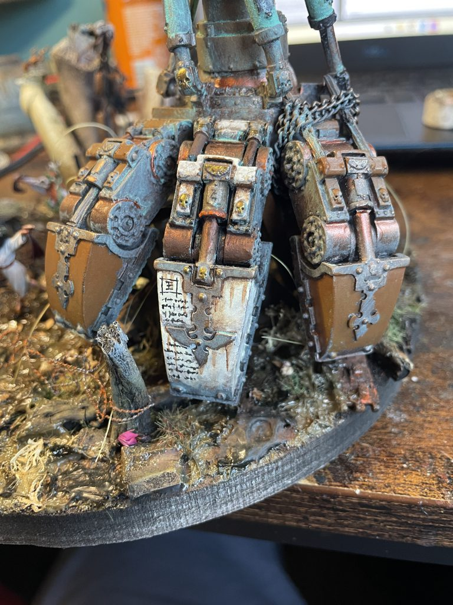
If I've got a style, it's hereI relay, slightly abashed, my intent - a style that is all my own, all deliberate, all very me, put there by my hand, recognisable. I did spend time, once, trying to codify it, to make something recognisably me so that people would say “oh, that looks like a Lenoon piece”. It was external, but now, I have moved off from that - it’s not for Instagram, but for the power of saying actually, this is what I want.
That’s the Doing, Being, Becoming, Belonging idea. You’re becoming a role, you’re giving yourself a role - you are becoming the model maker. Becoming the painter, and you’ll be able to see yourself in this role you’ve wanted to get to.
I reached out to Ceri to chat about flow, originally. There’s a delicate and wonderful point I think we can all relate to when it’s just working, the paint moves effortlessly, the game winds to your inevitable victory, the plastic and milliput and glue sits just so. It’s the bit we chase, that I have very publicly chased in writing and modelling.
The flow state, Ceri explains, is the optimum point - the space we occupy when modelling between the axis of skill and challenge. When we’re balanced between skill - we can do this - and challenge - not too hard, but not too easy either - we can flow, right up through the centre.
It shows as well if the task is too difficult compared to the skill mix, you're going to have a higher level of anxiety and if you're essentially too good for the task, you've just set yourself, you're going to get bored quickly.
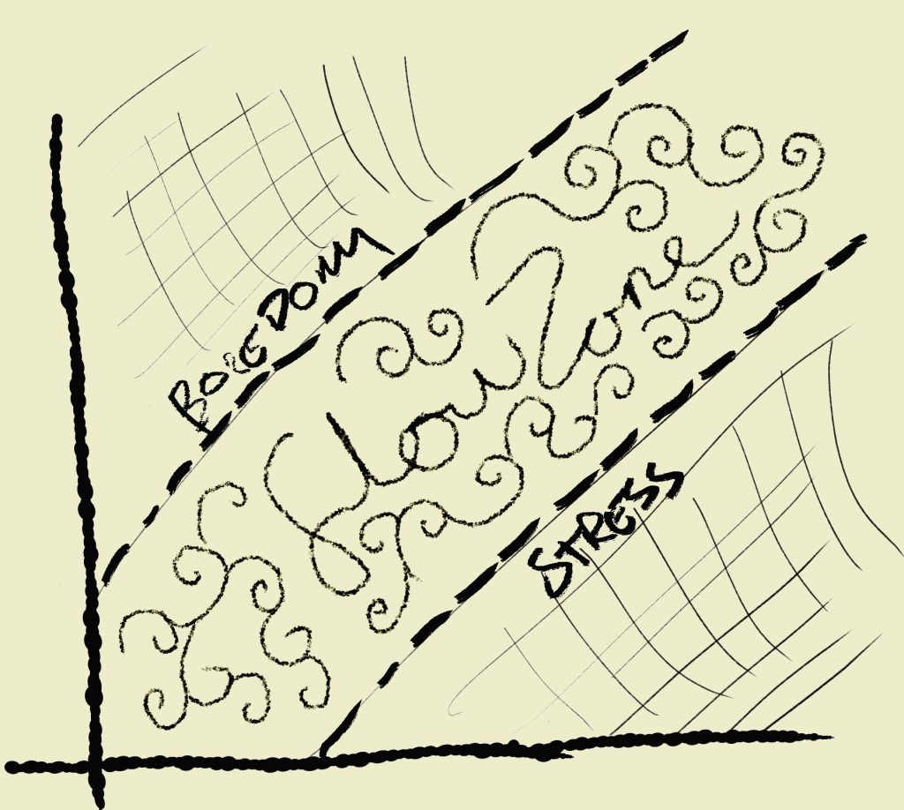
I think I got it, but I forgot to jot down the axesI sketch it as best I can it as she explains.
The challenge increases, and you have the ability to match it. When you’ve matched the two perfectly, that’s when you hit that perfect point and everything comes into focus. You’ve almost put yourself into a meditative state, where the mental processes have all calmed down. The background nervous system has calmed down. It gives your brain more of a chance to think, to go through problems
Loading...
I was there in the seasons - How long did I spend painting sheer fabric? I don’t know, time vanished. I stopped counting the seconds. I can’t get there when working resin, but I can with plastic, putty and water effects.
It’s similar to how we work things out when we’re dreaming. You’re giving your brain space without realising your subconscious has taken over
That one I know, oh very well indeed. The crew emerged from a dream.
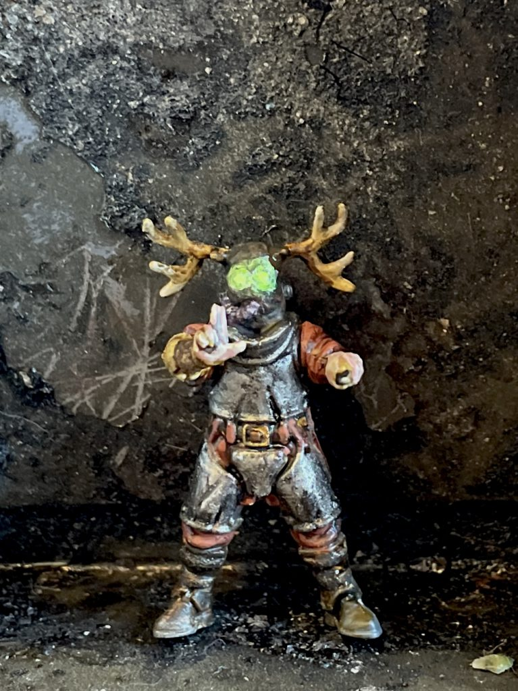
Titan Crew - Antlers on the Damned Infantry. Credit: LenoonThe idea really resonates with me and I see my modelling in it. Right up the centre, vibing as much with the unconscious as possible. There’s a solution in the model already, I know what to do, at some level. I need to find it. Can I - should I - force myself into flow?
It can have its downsides. It can become an addiction in a way. I mean, you're basically hitting your brain up with dopamine when you do it, so it can become a bit of an addiction and it can become a source of frustration. If you're trying to get to it, you won't get into it and so it then becomes a source of frustration.
The Porphyrion. It glowers.
People can fall so far into it that it becomes consuming, and they’re not able to come out of the chase of it, or don’t want to come out of it. That’s when you get things like relationship breakdowns, problems with work, problems holding onto a job, holding onto a friendship, those sorts of things. I dont think ive seen too many examples in the modelling community where it gets to that level, but certainly within other hobbies and activities it can get to that point.
Hmmm. I concede that maybe - just maybe - I might treat my Warhammer like that sometimes. Occasionally. I think of my last weeks of dreams, all engine-kills and growling reactors. Too much. I pat the Warhound on the foot to make sure it’s still there. I do not touch it again for two weeks.
Doctor of Copper
I spend those weeks without the flow state, and I can tell. I am antsy, uncomfortable. Kept away, I am keening. It gives me time to reflect on my process, and where it leads me. So far, I have stuck within that space, the alignment of skill and challenge, and it’s led me down a well worn path. I’m creating a big version of where it took me last time (and the time before that):One foot posing
A strange and unsettling head
White on brown on cream
Checks
The same silhouette
Same ol', same ol'. I can see it, too easily.
Loading...
I see it in the writing too. Intent did what I always do: establish, ramble, touch on paganism, come to a fevered conclusion. It’s written in my perennial rhythms - the endless drip drip drip of tripartite clause (add a fourth for extra meaning, team!) that I attempt to use ever-so-slightly hypnotically, my conscious use of more and more commas as ideas develop, my ending plea to something bigger and beyond-er my making. It is deliberate, but it will turn the Warhound into the lancer, or the Porphyrion, or the Questoris. To get out of this rut with the Warhound, I need new structures. New Praxis. New ways of making and writing, to expand that space where I can flow by not just increasing skill but increasing enjoyment. I have new materials - all those copper sheets - and they will create the break, the extension of the skill/challenge zone to open up the phase-space of flow to new forms. I know this from a long time ago. New materials mean new forms, but before they do there's a period of the same forms from new materials - this happens in clay, in metal, in stone, and particularly in Bronze. The first bronze axes look just like the last ones in stone. Perhaps this is the end and the beginning, freed by resin. I need to talk to someone who knows Copper and Bronze, and knows the secrets of making. Luckily, she is at hand.
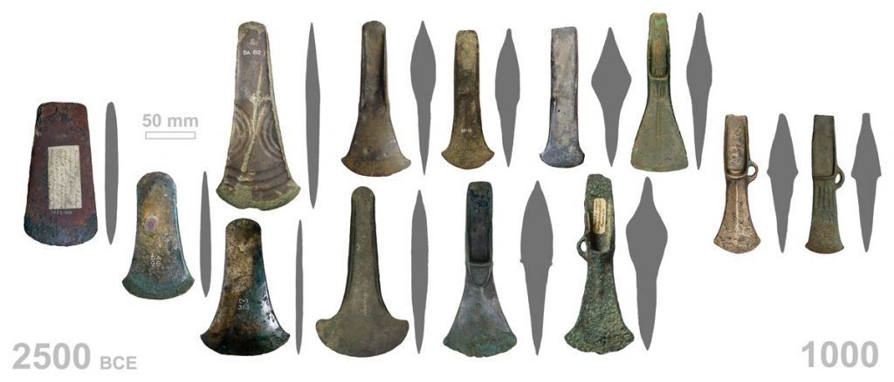
A chronology of Bronze Age axes. From - A Catalogue of British Bronze Age Axes, Including Basic Typology, Compositional Analyses and Associated Radiocarbon Dates, Bevan et al 2024.Photographed By Robin Maggs - National Museum Wales
2012
Rachel knows and understands and feels copper, brass and bronze better than anyone else I know, perhaps better than any since Hephaestus. Beyond that, she understands how and why we make, and she does so in a way that no one has ever thought before. To read her work on making, on copper and bronze, it is to see a living, glowing, thing that becomes the human soul. Here is a conversation I could have in person - we meet, all too infrequently - but I am impatient and, more importantly, I am intimidated. Rachel is a friend and a comrade and a Doctor, a kind and caring one that can explain even the most complicated interplay of posthumanist paradigms, that involves you in the discussion, makes you feel included in the grand and worthy project of posthumanist, feminist archaeology. But to stand in front of her intelligence when she casts it into the mould is to stand in the heat of the furnace - she is burningly, blisteringly intelligent. I need the remove of voice notes and asynchronous communication, just to keep up. I need quotes.
I read:
Often when we think about making, we envisage a maker who has a clear design in their head (or perhaps in a plan) that they have produced in advance and then execute. New materialist thinking approaches making quite differently. Rather than assuming that an agentic human sets out to execute their plan, it leaves space for the material itself to play a role in production
I understand:
If your understanding of agency is closely linked to intentionality, that it is something that rational human actors exercise, and thus something for which people, past and present, can be held accountable, it is little surprise that you might be alarmed by hearing that chairs, keys, or guns can also be associated with agency.
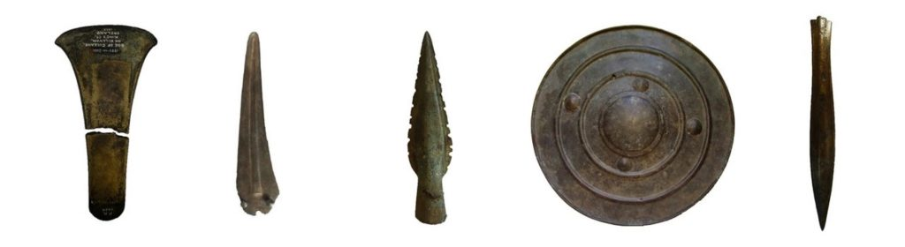
Bronze Age artefacts, from Rachel's project, via: https://le.ac.uk/archaeology/research/new-approaches-to-the-material-world/a-new-history-of-bronzeBoth sword and warrior emerge in parallel, through the way they produce a particular body capable of certain affects. These include the capacity to inflict violence, not in a generic way, but rather in a particular manner, involving specific bodily movements (slashing, stabbing). The emergence of swords does not allow the emergence of warriors, nor does the emergence of warriors allow the emergence of swords; rather the two are brought into being together.
I/we create:
We can consider how a potter's hands apply force to clay to differentiate a shape from the previous amorphous matter. This, of course, draws on the capacities of clay to be shaped, and works with the water softening the material and the wheel upon which the clay is spinning—this is no simple imposition of form. These intensive differences of force are what drive the emergence of the entities we recognize in the world around us, from how intensive differences in pressure produce weather patterns, or the intensive energies of sunlight cause plants to grow in specific ways. Difference, then, is not after the fact, a matter of post hoc comparison, but rather an affirmative force that produces the world.
Then, I ask. I'm thinking of the Bronze Age axes, the copies of stone. It feels like what I'm doing here, why I'm stuck.
What do you mean? The shapes, or something else?
Yeah the shapes. Why make the same shape in a new material? Even if the answer is "because that's what they knew to do."
So the axes themselves are a different shape really, but they make these small things called ingot axes that are like a mini version of a polished stone axe. They rarely have any wear on them, and are often at least partially unfinished. There, the shape of a stone axe has clear currency for people, so the decision to make them in that shape at least partially captures a need to make the new material fit into the existing world.
So the form is important, beyond the material? The copper doesn't simply allow new forms, but enables the transformation of old ones into new contexts.
Exactly. It transforms what shapes and properties are possible, and that continues the ongoing becoming of the axe.
So it's through the axes that copper can become something other
Yes - interestingly we also get new forms of stone axe at the same time (the battle axe), and a proliferation of more elaborate crafts generally.
I'm thinking of the resin affecting me, but my style and my meaning is there already. The resin must be passed through it, incorporate it, embody it.
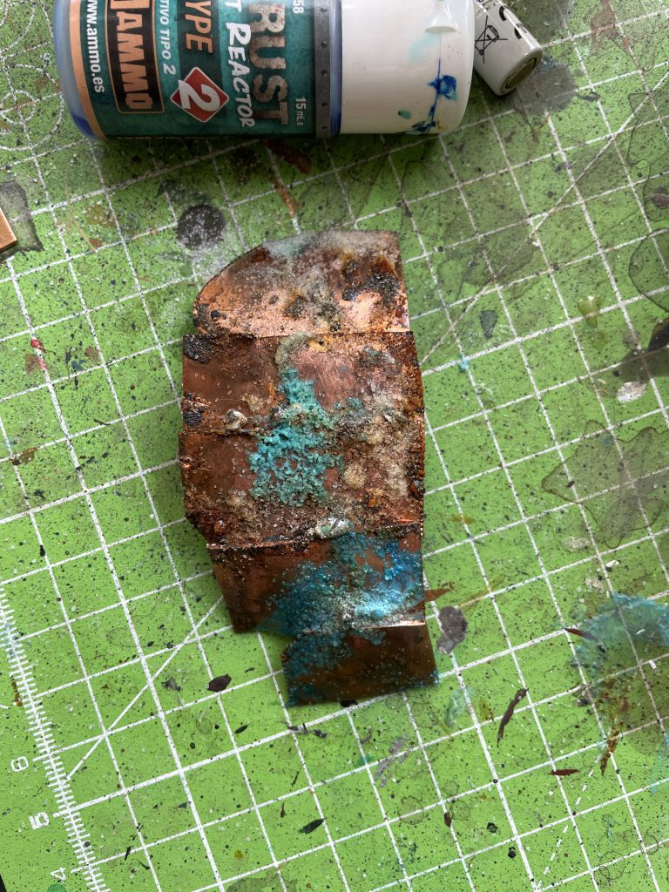
I start working the copperI ask again, with a different target:
New materials shape new practice, open new ways of being, while requiring socialisation, embedding into existing structures. Affect, difference, power, relation. This is something new to me and I’m forcing it into the same, long, narrative. What can I achieve if I stop warring against the resin and work with it, potter and clay, and what can I do to pass resin into my world of plastic, bone and pine?
Change Is Constant
Resin doesn’t fit my process. I have to work resin all at once, anything that requires or creates dust and shavings must be completed outside, furtively, then hosed down. Not a speck of resin dust should land in the house. I fear that if it does, I will be made ill. My children will be made ill. I act in haste, repent later, protect myself in plastics. I can’t go forward and back as easily, it is all irreversible, or so close to being so as to be unimportant. If I do, it is done. No drafts, no spare components. I am afraid to touch it, and must engage with that. That's my learning for this time round - engage with how you feel about the material agency, pull it the flow space and your gap between challenge and skill will encompass it. Work with it to its affect, and you will Do, Be, Become and Belong to it, through it and with it.So, write as you work, let it proceed in spirals (leaps, catastrophes, revolutions - thank you Vladimir), transformations of quantities into qualities, irrevocable, in snatches. I embrace to map out the next steps I just give in
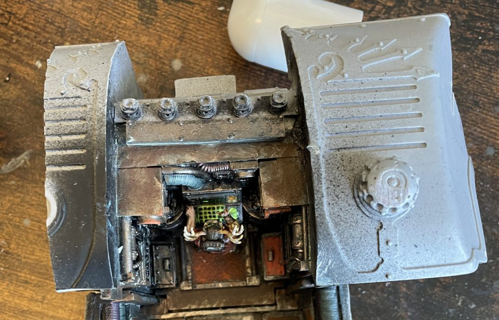
Goodbye Shoulder pad Lenoon’s warhound: structureI sit on the bus and think tonight I will saw off its shoulders tonight I will saw off its shoulders tonight I will take the saw and take off its shoulders straight through the steel pins and the rest of the day I think shoulders shoulders shoulders and then at night when all are asleep I don mask and gloves and glasses and under the light of a cold moon and the garden fairy lights I am still ambivalent towards I take off a shoulder and realise I have no plan for what will replace them
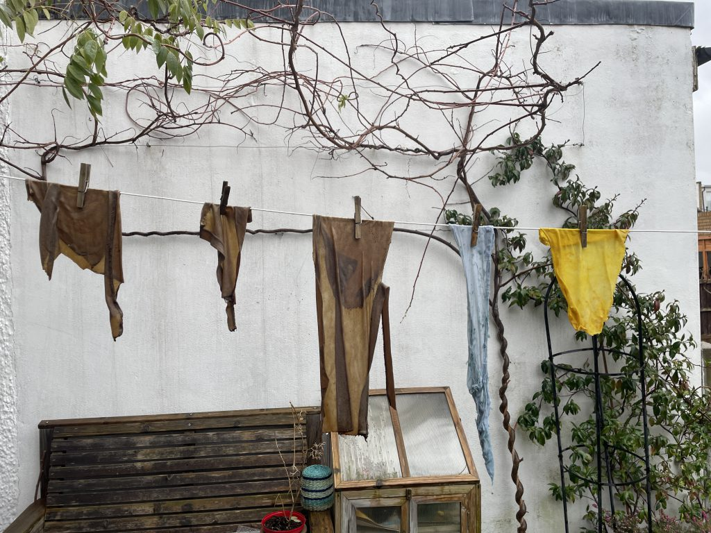
Vegetable Dyes, Lenoon’s warhound: structurethere is a day spent in the garden with a t-shirt worn seethrough, with turmeric, onion, glycerin cabbage and dandelion inculcating children into messy chaos into age old practice i pretend to renew that I treat casually and talk of seriously. We dye our hands and our clothes and i croon over them, i laugh at a pigeon, salute big and little, caper like the de’il, hoot like an owl. We colour in the feathers i see tumbling and cascading down, bone, metal, resin, glass, water, wood, stone grass and lavender catch the echoes of the dirge for all that cloth had seen and done, rendered down into potentiality, drawing into fibres the scraps of pigment and colour, as always struck with the abyssal sadness that life is not just this, not this moment in a rut, polished smooth to elide the rain;
Loading...
I buy a blowtorch, learn to solder, take off half a fingerprint on red-hot copper, leave a thousand micro-lacerations on my hands from edges and working the tin snips. Pieced together from paper, then plastic, then metal, The head of bendigeidifran emerges painfully from a cocoon of glue and woodpulp, fiery and hot as the sun, stuck together with paperclips and hope, the cult-head, fountain-head, blessed head returning to the white hill where it belongs
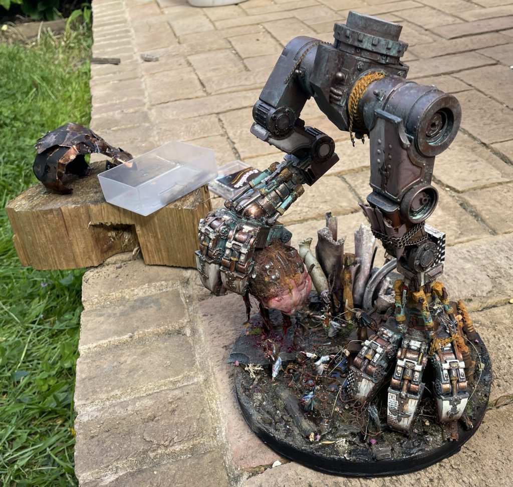
a good place for a pauseBetter. We progress.
Have any questions or feedback? Drop us a note in the comments below or email us at contact@goonhammer.com. Want articles like this linked in your inbox every Monday morning? Sign up for our newsletter. And don’t forget that you can support us on Patreon for backer rewards like early video content, Administratum access, an ad-free experience on our website and more.
Originally published on Goonhammer.


Leave a Comment